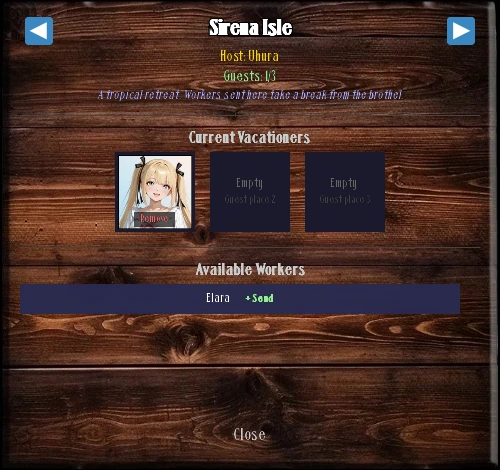
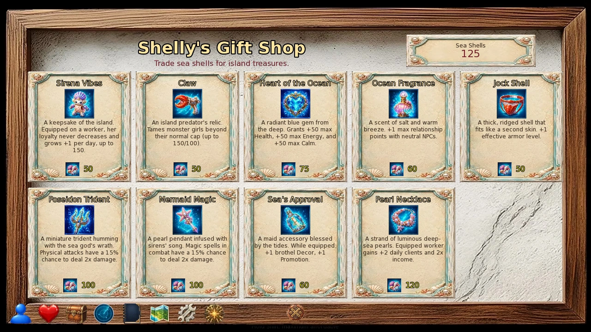
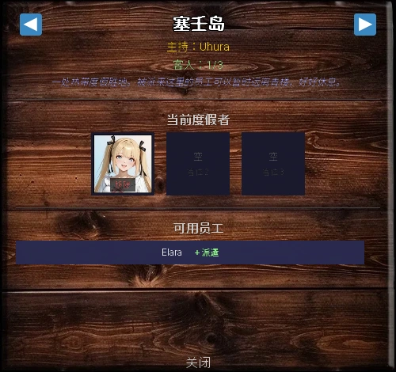
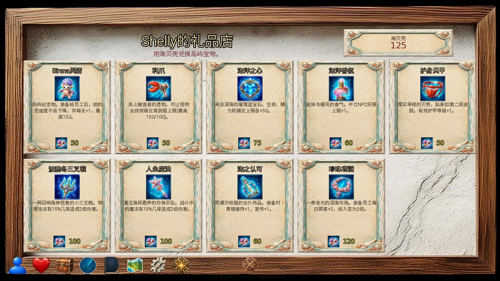

Select a screenshot to enlarge it. Screens show example inventories and progress.
Unlock Sirena Isle
Sirena Isle is a paid-content destination for worker vacations, recovery and Sea Shell purchases. Its permanent access quest costs $1, 000, 000 and 120 minutes. Later trips do not repeat that purchase.
- Own the Rose & Thorn, then commission its Courtyard and Pool from Gastoff. The Pool needs business reputation 6 and the Courtyard.
- Complete Sashimi’s three dungeon water encounters from Floor 13 onward. With the Pool built, catch 25 or more fish in one Marina fishing session and finish The Mermaid at the Rock.
- Raise Sashimi to Friend. Visit the Pool between 09:00 and 18:59 for The Beast Between Worlds, then revisit for An Island in Mind.
- Meet Marina in the Fishing Hut Interior and select Boat to Sirena Isle. Pay the access cost and finish the introductory voyage.
You need to receive the Void Leviathan quest, not catch that fish, before the island proposal. Sashimi does not need to be recruited as a worker merely to reach this access sequence. See Fishing for the 25-fish session and Sashimi for her personal progression.
Travel, map and recovery
After access is unlocked, Travel to Sirena Isle is available from the Rose & Thorn Pool and Marina’s Fishing Hut Interior. Travel out takes 45 minutes; the return boat at the island Entrance takes 30 minutes and returns to the Pool. The ordinary world map is disabled here: use the island’s connected paths.
| Location | Use |
|---|---|
| Sirena Isle Entrance | Return boat and main paths |
| Sirena Isle Beach | Relax, Sunset Walk, private activity; Cave and Water Rock paths |
| Sirena Isle Buffet | Eat Buffet and Eat Together |
| Sirena Isle Bedroom | Sleep |
| Sirena Isle Spa | Spa Night |
| Sirena Isle Gift Shop | Shelly’s Gift Shop |
| Sirena Isle Water Rock | Sashimi and island conversations |
| Sirena Isle Cave | Passage to the interior |
| Sirena Isle Cave Interior | Search Cavern |
Ordinary paths between resort buildings take 0 minutes. Beach → Water Rock takes 15 minutes and 15 Energy; swimming back takes 15 minutes. At the Buffet, Eat Buffet is free, takes 25 minutes, and restores 100 Satiation. Bedroom Sleep takes 6 hours and adds 999 Health, Energy and Calm, up to their maxima. It is recovery, not an increase to those maxima.
Manage three vacation slots
From Worker Quarters → Manage Rooms → Sirena Isle, assign up to three active recruited workers. A worker cannot already be away or assigned as an apprentice. Room masters can vacation; remove an apprenticeship first when that is the blocker. All 30 workers are supported, with Ava & Eva sharing one slot. Cinnamon also needs her completed recruitment scene, A Room to Perform.
A vacation lasts until you use Remove in its slot. Each completed business day spent away gives +25 Loyalty, capped at 150; −40 Stress; +40 Health, capped at maximum. Loyalty decay pauses. The worker earns no ordinary pay, clients, work EXP or event rewards while away. This is a recovery tradeoff, not extra passive income.
Vacationing workers leave their normal town appearances. Their presence on the island rolls when you arrive at the Beach, Buffet, Bedroom or Spa from 07:00 to 22:59: 25% per vacationer, so three give a 75% appearance chance. Opening the same location repeatedly without leaving does not reroll. Move to another area and return; assignment does not guarantee your chosen worker appears on the next arrival.

Worker activities and island scenes
| Activity | Where | Start window | Time and limit | Player benefit |
|---|---|---|---|---|
| Talk | Any worker presence | 07:00–22:59 | 15 min; 6/day/worker | +1 base relationship |
| Relax with [worker] | Beach | 08:00–15:59 | 60 min; 1/day/worker | Relationship; +50 Energy |
| Eat with [worker] | Buffet | 11:00–15:59 | 60 min; 1/day/worker | Relationship; +100 Satiation |
| Sunset Walk | Beach | 17:00–19:59 | 60 min; 1/day/worker | Repeatable H 2 H relationship scene |
| Spa Night: [worker] | Spa | 19:00–22:59 | 60 min; 1/day/worker | Relationship; +25 Health, Energy and Calm |
| Private Beach Time | Beach | 10:00–17:59 | 60 min; 1/day/supported worker | +50 base relationship; optional intimate scene |
Activity availability requires the worker to be vacationing and present at the right location. End hours are exclusive. Relax, meals, Spa Night and Sunset Walk support the full vacation roster, including Ryia; Private Beach Time has its own smaller roster and content access requirements. Ava & Eva’s repeatable Sunset Walk also needs one of their two qualifying personal H 2 Hs completed first.
Private Beach Time roster
A.R.I.A., Audrey, Ava & Eva, Bellavia, Elara, Foxy, Grace, Honey, Kasumi, Lindia, Maize, Momosagi, Raven, Sandra, Shadow, Sophie, Valkyra and Vespa. A missing activity for another vacationer does not indicate a broken assignment.
Uhura is at the Entrance and Shelly at the Gift Shop, normally 08:00–20:59. Their ordinary Talk takes 20 minutes and gives 1 base relationship point, with 50 normal talks per day before the usual over-limit rules. These are separate from a vacationer’s 15-minute Talk.
During supported pregnancy stages, non-Talk resort activities can be blocked; Talk remains available when the character is otherwise present. Check the Pregnancy guide and current Objectives when an assigned worker has no expected activity.
One-time conversations also involve pairs or trios of vacationers and island residents. Try different combinations and revisit the Beach, Buffet, Spa, Entrance, Gift Shop and Water Rock at different times. Those scenes have their own prerequisites; this guide leaves their discoveries to play.
Earn and spend Sea Shells
Sea Shells are a separate currency shown at Shelly’s Gift Shop. Relax, Eat Together, Sunset Walk, Spa Night, supported private beach activities, and qualifying one-time island scenes each have a 25% chance for 1 shell on completion. Talk and the solo Buffet meal are not shell-farming actions.
An active Luck Potion retries one failed eligible roll: a 25% activity chance becomes 43.75%, and the cavern victory’s 40% roll becomes 64%. It does not guarantee a shell or alter the cavern’s initial encounter-group selection. Sea Shells can also be spent in specific dungeon trades; leave some aside if a current objective needs them.
Shelly’s Gift Shop
Use Browse the Gift Shop at the Gift Shop. Prices below are in Sea Shells. Worker and maid equipment only helps while equipped; owning it in inventory is insufficient. Unique goods stay visible but cannot be repurchased after ownership.
| Item | Shells | Limit | Effect |
|---|---|---|---|
| Sirena Vibes | 50 | Repeatable | Equip on a worker: Loyalty cannot fall; +1 per working day up to 150 |
| Claw | 50 | One purchase | Monster discipline tool: +10 Tamed, may raise its cap to 150 |
| Heart of the Ocean | 75 | One purchase | Owned Key Item: +50 maximum Health, Energy and Calm |
| Ocean Fragrance | 60 | One purchase | Owned Key Item: +1 maximum relationship-point roll with neutral NPCs |
| Jock Shell | 50 | One purchase | Owned Key Item: +1 effective armor level |
| Poseidon Trident | 100 | One purchase | Owned Key Item: physical attacks have a 15% chance for double damage |
| Mermaid Magic | 100 | One purchase | Owned Key Item: combat spells have a 15% chance for double damage |
| Sea's Approval | 60 | One purchase | Equip on a maid: +1 Decor and +1 Promotion |
| Pearl Necklace | 120 | One purchase | Equip on a worker: +2 daily clients; ×2 personal income |
| Snail Slime | 10 | Repeatable | Owned Queenstone required; +1 Queenstone potency level |
Snail Slime only appears after you own a Queenstone. One purchase adds one potency level; hold Shift to buy the maximum number of levels affordable with your current shells. Check the quoted quantity and before/after levels before buying. This does not add another Queenstone.
For broad recovery capacity, consider Heart of the Ocean. Choose the Trident or Mermaid Magic for your main damage type, or Pearl Necklace for a working earner. Sirena Vibes protects Loyalty, but a vacationing worker still does not generate ordinary income. Queenstone connections are covered in Soul Stones.

Search Sirena Cavern
From the Beach, go to the Cave and enter its interior. Search Cavern costs 45 minutes and 15 Energy. Every search independently has a 2% chance for +1 Luck.
| Result | Chance per search | Reward or cost |
|---|---|---|
| Enemy | 40% | Fight or flee; victory can drop a shell |
| Pickaxe bundle | 13⅓% | Take 2–5 Iron and 2–4 Copper Pickaxes; roll effective Luck against 1–120 for one Diamond Pickaxe |
| Shell crevice | 13⅓% | 1–3 Sea Shells |
| Gold bag | 13⅓% | 10–30 gold + 2 × effective Luck |
| Nothing | 20% | No additional reward |
The three attack choices all win the cavern encounter; they do not test your combat build. A win removes 5–50 Health, 5–50 Energy and 5–50 Calm, rolled independently, leaving each at least 1. It then rolls a 40% chance for 1 Sea Shell. Fleeing avoids those battle costs and reward; the search’s initial time and Energy remain spent.
Shell-farming comparison
If you fight every encounter, the chance of at least one shell per search is about 29.33%: 13⅓% direct shell finds plus 40% encounters × 40% victory drops. With the Luck Potion retry on victory drops, it is about 38.93%. Direct finds can award several shells. Budget recovery time as well as search time; the free Buffet and Bedroom are useful between runs.
Plan a visit and resolve blockers
- For recovery, assign stressed workers and let completed business reports apply the vacation benefits. Remove them when ready to return to earning.
- For shells and relationships, arrive before the activity window, move between presence locations to find your vacationers, and combine daytime Relax or meals with the later Sunset Walk and Spa Night.
- If no boat action appears, finish An Island in Mind and speak to Marina; simply building the Pool does not open the island.
- If a worker cannot be assigned, check recruitment, active status, the three slots, and an existing apprenticeship. If nobody appears, check the 07:00–22:59 presence window and try a new arrival.
- If a particular action is absent, check its location, separate daily limit, supported roster and personal requirements. The solo Buffet action and Eat Together are different.
See Rose & Thorn operations, daily calculation reference and Marina.
解锁塞壬岛
塞壬岛是付费内容中的度假地点，可安排员工休假、恢复资源，并用海贝壳购物。首次永久开通需要$1,000,000和120分钟，以后往返不用再付这笔开通费。
- 拥有玫瑰与荆棘，再请Gastoff建庭院和水池。水池要求经营声誉6，并已建好庭院。
- 从地下城13层起完成Sashimi的三次水中遭遇。水池建好后，在同一场Marina捕鱼中捕获至少25条鱼，完成岩石上的人鱼。
- 把Sashimi的关系提高到朋友，在09:00–18:59到水池触发世界之间的巨兽，再回来触发心中的小岛。
- 在钓鱼小屋内部找到Marina，选择乘船前往塞壬岛，支付费用并完成首次航行。
岛屿提案要求先接到虚空利维坦任务，不要求先钓到它。进入这条解锁流程也不要求已把Sashimi招成员工。25条鱼的准备可查捕鱼指南，个人进度可查Sashimi。
往返、地图与恢复
开通后，可从玫瑰与荆棘的水池，或Marina的钓鱼小屋内部选择前往塞壬岛。去程45分钟；岛入口的返程船用30分钟回到水池。岛上不能用普通世界地图，要沿场景内的通道移动。
| 地点 | 用途 |
|---|---|
| 塞壬岛入口 | 返程船及主要通道 |
| 塞壬岛海滩 | 放松、日落散步、私人活动；通往洞穴和水中岩 |
| 塞壬岛自助餐 | 吃自助餐、一起用餐 |
| 塞壬岛卧室 | 睡觉 |
| 塞壬岛水疗馆 | 水疗之夜 |
| 塞壬岛礼品店 | Shelly的礼品店 |
| 塞壬岛水中岩 | Sashimi及岛上对话 |
| 塞壬岛洞穴 | 通往洞穴内部 |
| 塞壬岛洞穴内部 | 搜索洞窟 |
度假村建筑之间的一般通道耗时0分钟。海滩游到水中岩需要15分钟、15精力，游回海滩需15分钟。自助餐处的吃自助餐免费，耗时25分钟，恢复100饱腹感。卧室的睡觉耗时6小时，为生命、精力、镇定各恢复999，至各自上限；这不会提高资源上限。
管理三个休假名额
在员工宿舍 → 管理房间 → 塞壬岛中，最多安排三名已招募且处于启用状态的员工。不能重复安排正在休假的员工，也不能直接安排已有学徒岗位的人；先移除学徒岗位即可。房间负责人可以休假。30名员工都受支持，Ava & Eva共用一个名额。Cinnamon还需完成招募剧情一间属于她的表演室。
休假会持续到你在名额中点击移除。每结算一个离岗的经营日，她获得25忠诚度，最高150；压力减少40；生命恢复40，至上限，期间暂停忠诚度衰减。但她不会获得普通工作收入、客户、工作经验或每日事件奖励，所以休假需要权衡停工损失。
休假员工不会继续出现在城内的原定位置。你在07:00–22:59进入海滩、自助餐、卧室或水疗馆时，会重新抽取在场员工：每名休假者贡献25%出现率，三人合计75%。停留原地反复打开界面不会重抽；去别处再回来才有新机会，也不能保证下次出现的就是指定的人。

员工活动与岛上互动
| 活动 | 地点 | 可开始时段 | 耗时与限制 | 玩家收益 |
|---|---|---|---|---|
| 交谈 | 员工在场的地点 | 07:00–22:59 | 15分钟；每人每天6次 | 基础关系点+1 |
| 和[员工]放松 | 海滩 | 08:00–15:59 | 60分钟；每人每天1次 | 关系点；恢复50精力 |
| 和[员工]用餐 | 自助餐 | 11:00–15:59 | 60分钟；每人每天1次 | 关系点；恢复100饱腹感 |
| 日落散步 | 海滩 | 17:00–19:59 | 60分钟；每人每天1次 | 可重复的谈心对话 |
| 和[员工]共度水疗夜 | 水疗馆 | 19:00–22:59 | 60分钟；每人每天1次 | 关系点；生命、精力、镇定各恢复25 |
| 海滩私密时光 | 海滩 | 10:00–17:59 | 60分钟；支持的员工每天1次 | 基础关系点+50；可选亲密场景 |
必须是正在休假且当前在场的员工，活动才会出现；表内结束小时不包含在开放时段内。放松、一起用餐、水疗之夜和日落散步支持完整休假名单，包括Ryia；海滩私密时光只支持部分员工，并另有内容权限要求。Ava & Eva的重复日落散步还要求先完成她们两段相关个人谈心中的一段。
海滩私密时光支持名单
A.R.I.A.、Audrey、Ava & Eva、Bellavia、Elara、Foxy、Grace、Honey、Kasumi、Lindia、Maize、Momosagi、Raven、Sandra、Shadow、Sophie、Valkyra和Vespa。其他休假员工没有此项活动，并不代表安排失败。
Uhura通常在入口、Shelly在礼品店，时段为08:00–20:59。她们的普通交谈耗时20分钟，给1基础关系点，每天50次正常交谈后适用一般超次规则；这与休假员工15分钟的交谈不同。
受支持的怀孕阶段可能阻止交谈以外的度假活动；角色确实在场时仍可交谈。已安排员工却缺少预期活动时，也可查看怀孕系统与当前目标。
岛上还有两人、三人及员工与岛上居民的一次性互动。可轮换休假组合，在不同时段回访海滩、自助餐、水疗馆、入口、礼品店和水中岩。各段都有自己的条件，具体发现留给游戏。
海贝壳的获取与用途
海贝壳是独立货币，余额显示在Shelly的礼品店中。完成放松、一起用餐、日落散步、水疗之夜、受支持的海滩私人活动，以及符合条件的一次性岛上互动时，各有25%概率获得1枚。交谈和独自吃自助餐不属于刷海贝壳的活动。
有效的幸运药水会在符合条件的失败判定后重试一次：活动的25%提高到43.75%，洞穴战斗的40%提高到64%。它不保证掉落，也不改变洞穴最初的遭遇类别概率。某些地下城交易也用海贝壳；当前目标有需求时，可先留下一部分。
Shelly的礼品店
在礼品店选择逛逛礼品店。下列价格均以海贝壳计。员工和女仆装备必须实际穿戴才生效，放在库存里无效。限购商品买过后仍可见，但不能重复购买。
| 商品 | 海贝壳 | 限制 | 效果 |
|---|---|---|---|
| Sirena风情 | 50 | 可重复 | 员工装备：忠诚度不下降，工作日增加1，最高150 |
| 利爪 | 50 | 限购一次 | 魔物训导工具：驯服度+10，可把上限提高至150 |
| 海洋之心 | 75 | 限购一次 | 持有即生效：生命、精力、镇定上限各+50 |
| 海洋香氛 | 60 | 限购一次 | 持有即生效：与中立NPC互动的关系点随机上限+1 |
| 护身贝甲 | 50 | 限购一次 | 持有即生效：有效护甲等级+1 |
| 波塞冬三叉戟 | 100 | 限购一次 | 持有即生效：物理攻击15%概率造成双倍伤害 |
| 人鱼魔法 | 100 | 限购一次 | 持有即生效：战斗法术15%概率造成双倍伤害 |
| 海之认可 | 60 | 限购一次 | 女仆装备：装饰与宣传各+1 |
| 珍珠项链 | 120 | 限购一次 | 员工装备：每日客户+2，个人收入×2 |
| 蜗牛黏液 | 10 | 可重复 | 需已持有女王石；女王石效力等级+1 |
已有女王石后才会显示蜗牛黏液。每买一份提高一级效力；按住Shift可按当前海贝壳余额购买最多等级。付款前看清数量和升级前后的等级；它不会额外送一块女王石。
想扩大通用恢复空间，可考虑海洋之心；以主力伤害类型选择波塞冬三叉戟或人鱼魔法，也可给持续工作的主力员工买珍珠项链。Sirena风情适合维持忠诚度，但休假员工依然没有普通工作收入。女王石的相关机制见灵魂石指南。

搜索塞壬岛洞穴
从海滩前往洞穴，再进入洞穴内部。搜索洞窟消耗45分钟、15精力。每次搜索还独立有2%概率增加1点幸运。
| 结果 | 单次搜索概率 | 收益或代价 |
|---|---|---|
| 敌人 | 40% | 可战斗或逃跑；获胜后有海贝壳判定 |
| 镐包 | 13⅓% | 取走获得2–5把铁镐、2–4把铜镐；修正幸运对1–120掷骰，成功额外得1把钻石镐 |
| 贝壳缝隙 | 13⅓% | 1–3枚海贝壳 |
| 金币袋 | 13⅓% | 10–30金币＋2×修正后的幸运 |
| 无发现 | 20% | 没有额外奖励 |
三种攻击选项都会获胜，不会检验你的战斗配装。每次胜利分别随机扣除5–50生命、5–50精力、5–50镇定，三项独立抽取，最低保留1；随后有40%概率获得1枚海贝壳。逃跑可避开这次战斗消耗，但也没有战利品；搜索最初的时间和精力已经支付。
刷海贝壳的概率比较
若每次遇敌都打赢，单次搜索至少得到一枚海贝壳的概率约为29.33%：13⅓%直接发现，加上40%遇敌×40%掉落。幸运药水重试作用于战斗掉落后，总概率约38.93%。直接发现可能一次给多枚。安排路线时也要计入恢复时间；免费自助餐和卧室很适合穿插使用。
安排一天与排查条件
- 以恢复为主时，安排高压力员工休假，让已完成经营日的报告落实恢复效果；准备恢复收入时再移除休假。
- 以海贝壳和关系为主时，在活动开始前到岛，往返不同场景寻找休假员工，把白天放松或用餐与傍晚散步、夜间水疗串起来。
- 没有乘船选项时，先完成「心中的小岛」再找Marina；只建水池不会自动开通。
- 不能安排员工时，检查招募与启用状态、三个名额是否已满、是否仍有学徒岗位。岛上没人时，确认处于07:00–22:59，再离开并重新进入场景。
- 某项活动缺失时，检查地点、该活动自己的每日次数、支持名单和个人条件。独自吃自助餐与一起用餐是两项不同操作。
Adapted and updated from the community Chronoromancer Wiki. Community source and history · CC BY-SA 4.0. Game images © Chronoromancer Studio.